Microsoft wants you to believe that Windows Phone 8 and 8.1 are dead, but the Windows Phone community says, "screw you, it never dies!"
I got 2 Lumia phones running on Windows 10 Mobile: a broken Lumia 535 and a working Lumia 830. Windows 10 Mobile was meant to be a revolutionary update of Windows Phone 8/8.1. However, after using it on these 2 Lumia phones, I was disappointed as they were too underpowered to run smoothly. Plus, watching this comparison video from Ali's Tech Garage put the last straw on my trust with Windows 10 Mobile — it is ugly and poorly optimized.
That's how I started my journey with Windows Phone 8.1. After some research and some hacking process, here is the list of functionalities that Windows Phone 8/8.1 can still serve well in 2026. The order is purely by preference and motivation.
Disclaimer: This list of functionalities is SPECIFICALLY made for Lumia phones; there are features that might not or are guaranteed to work on non-Lumia phones.
The list of functionalities will be continuously updated in the future.
Of course. It's a phone regardless. However, it hugely depends on the country you are in because chances are they have discontinued the required bandwidth/connection for the phone.
When it comes to contacts, if you have a Lumia phone, there is a useful app called Transfer My Data. It transfers contacts (via either Bluetooth or an SD card) and messages (only via an SD card) from an Android or a Windows Phone to a new Windows Phone. This app is handy because Windows Phone 8/8.1 does not support importing multiple contacts from a single .vcf file — it only shows one contact.
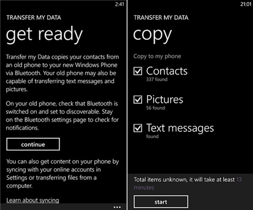
Screenshot of the Transfer My Data app. Source: jihosoft
Most Lumia phones were known for their exceptional camera quality during their days. Even today, they still take relatively good photos. They could be used as digicams thanks to their vintage-looking photos and untouched color processing. On some devices, especially the Lumia 1020, their high definition photos could arguably survive and even compete well with modern smartphones with massive camera lenses. Well, doesn't the Lumia 1020 already have a massive camera lens?
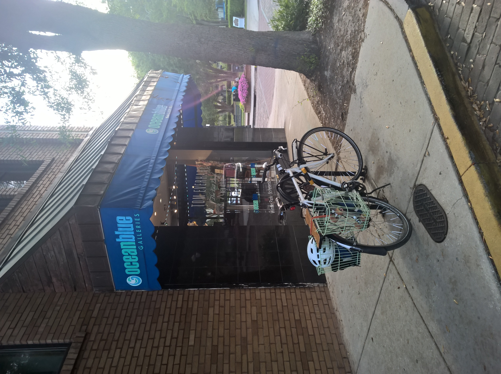
Photos taken on Lumia 930.
"Wake up, it's 2012". This saying is accurate considering the games made for Windows Phone 8/8.1, which were released between 2012 (when Windows Phone 8 was released) and 2015, before Windows 10 Mobile was a thing. A great time capsule in case you want to take a break from today's world.
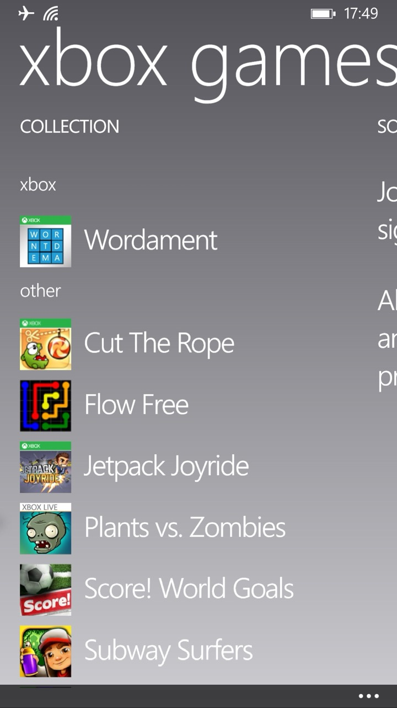
List of games I installed.
SMS should work if you are in a country that supports the required bandwidth/connection for the phone. For online options, there are 2 Discord clients: MetroCord and Unicord Legacy. I would recommend MetroCord, which is, by far, the most stable 3rd party Discord client on Windows Phone 8/8.1. There is a client for Telegram on Windows Phone 8/8.1 called Melegram. A quick reminder: always use an alt account if you want to use any 3rd party client, regardless of the app, to prevent the risk of account ban, especially on Telegram.
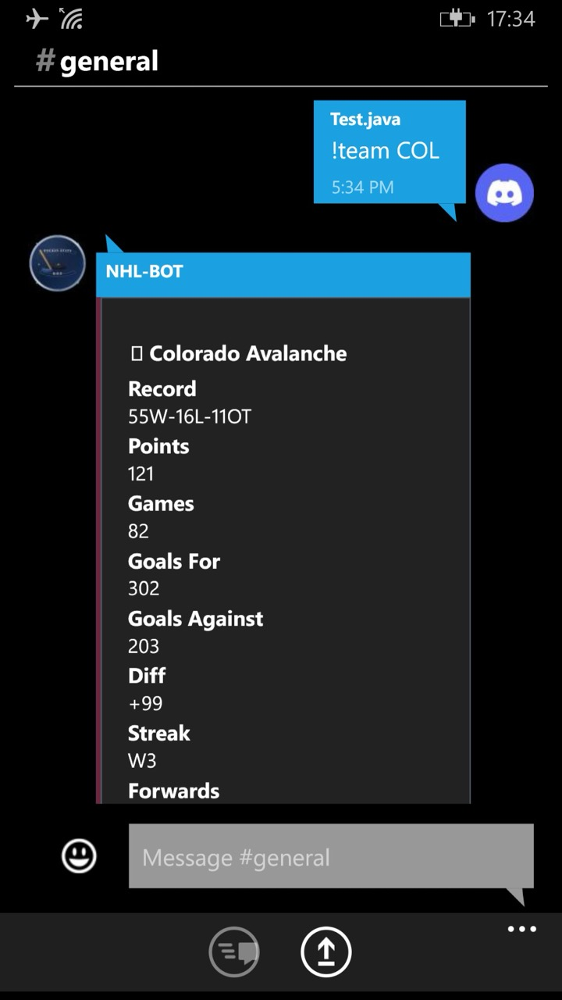
Screenshot of MetroCord
This is a niche use case, so I would not go into detail. Here is a beautiful guide made by Ali's Tech Garage on YouTube. He made a video entirely on Windows Phone 8.1, including the editing and publishing process.
There are several AI chatbot apps available. MetroChat is perhaps the best option as it is usable out of the box. It uses Groq as the backend, shipping with open-source cloud models, namely gpt-oss and llama. If you prefer a true ChatGPT or Google Gemini experience, you would want to try ChatGPT (yes, that's the name of the app, but it is not an official client from OpenAI) or LumiGem, a Google Gemini client. Make sure to prepare an API key for each corresponding app.
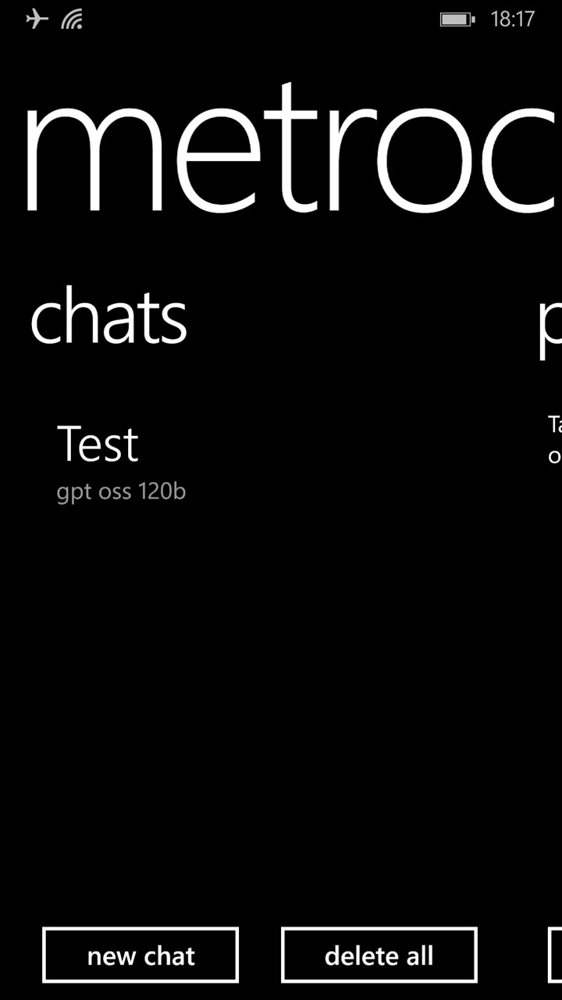
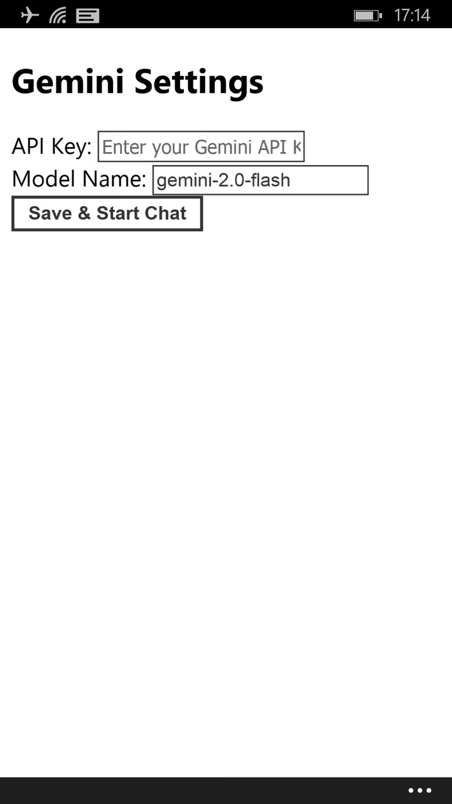
Screenshots of MetroChat, ChatGPT, and LumiGem, respectively.
I would like to group both use cases as one single point because they are both audio-intensive actions. Music playback is perhaps the number one way to repurpose any Windows Phone, as it does not require any power user modifications, such as jailbreaking. Just import your music files, and you're ready. However, if you prefer streaming apps, you have several options to choose from, thanks to the help of jailbreaking and app sideloading. Valia is a good app. It can stream music, and it does its job decently. Another cool thing is that its 3rd party integration is surprisingly generous. You can sign into your Last.fm account and One Live account to sync your music libraries. It is basically a modern recreation of Nokia Music or Xbox Music for Windows Phone 8/8.1. ReSpot, having a Spotify logo and app UI in mind, does a decent job in searching and streaming songs thanks to utilizing YouTube Music as the backend.
Radio is also a basic functionality on a phone, and on some Lumia phones, the Radio app is preinstalled. It works as intended — make sure to prepare your headphones to use as an antenna. If you prefer online radio, luckily, TuneIn Radio is still rocking well. You can still listen, follow, and pin radio stations to the Start screen. Shoutout to SomaFM for their amazing curated music radio stations, by the way.
In terms of podcast streaming, there is a nice treat from Microsoft/Nokia: the stock Podcasts app. It is preinstalled in most (Nokia) Lumia phones starting from Windows Phone 8. While the search function is broken with normal search queries, you can still subscribe to podcast shows by specifying the show's RSS URL, which can be found on Castos. Ali's Tech Guide also made a good demo of the Podcasts app; check it out.
Windows Phone 8/8.1 uses Internet Explorer as the default web browser. The browser was long obsolete; however, it is capable of loading some broken-looking websites. For instance, here is (a random website) being loaded on Internet Explorer.
The text is readable, but the experience is generally horrible, plus the slow loading time, almost no JavaScript support, weird display, etc. Due to the system's limitation, there is no way to create a new browser on Windows Phone 8/8.1 that uses a different web engine than the stock one. The only good alternative to reading online news is relying on news apps. MSN News app was discontinued for a couple of years, and it has little potential of being functional despite being patched by newRetiled. Newser is also a good choice thanks to its beautiful UI and its deep integration into the lock screen. Ali's Tech Garage also did a great video review of Newser; check it out.
If the definition of social media is Facebook or TikTok, it is fair to bash Windows Phone 8/8.1 because it cannot run any of them. No brainrot available on Windows Phone. Other than that, Windows Phone 8/8.1 is sorta usable with some types of social media, depending on your use case. Baconit works well despite a major API change from Reddit in 2023. You can still search for subreddits and view posts. You can pin subreddits to the Start screen for easier access. There are clients for Mastodon, Vine, BlueSky and Instagram (as a clone version called Retrogram) as well.
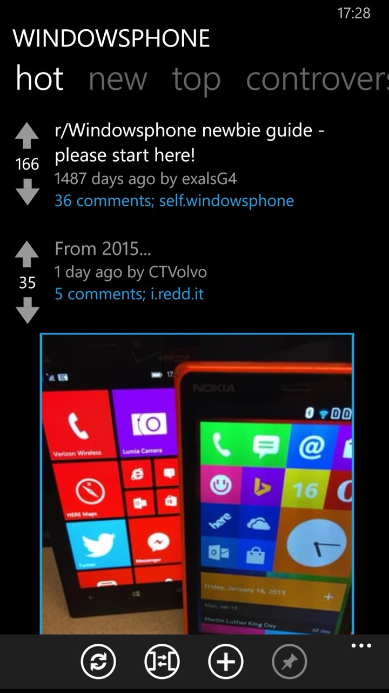
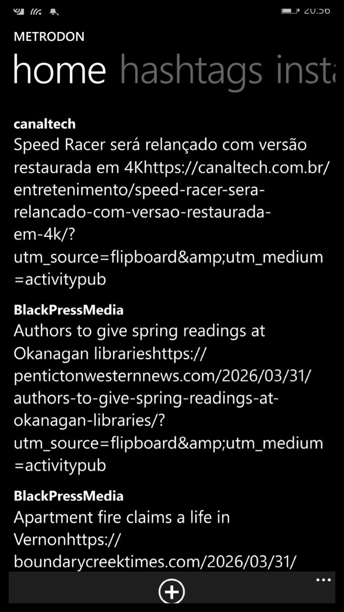
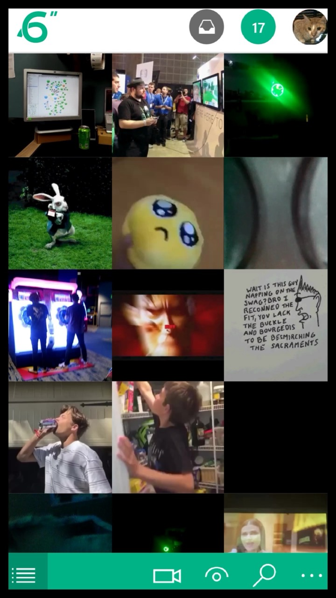
Screenshots of Baconit, Metrodon, and 6sec, respectively. Source: Live Store Web Portal
Similar to the MSN News app, the MSN Weather app is not functional despite using the newRetiled version. However, there are some good alternatives, including Haru and AccuWeather. Haru has good support with Live Tiles, while AccuWeather does a good job at being AccuWeather, a reliable weather source. Sadly, the app does not show either the lock screen wallpaper or the detailed status despite having support.
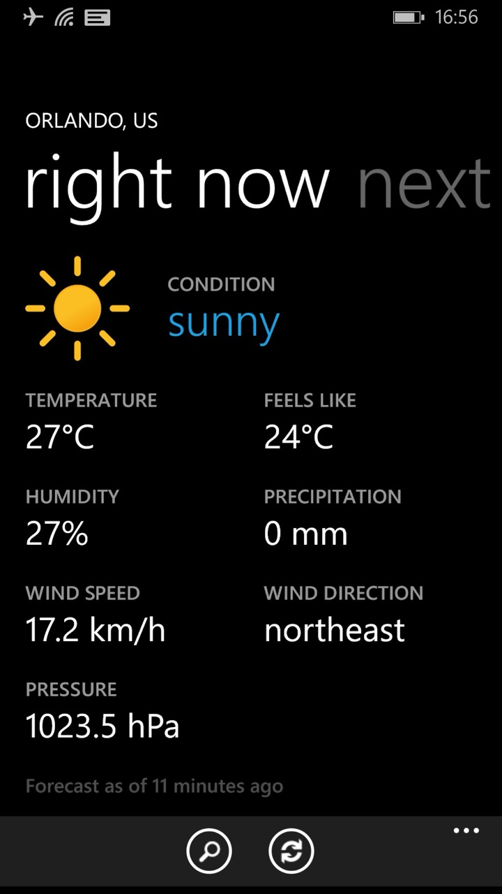
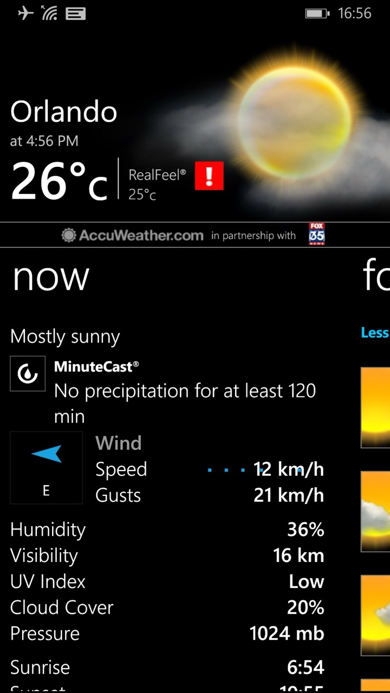
Screenshots of Haru and AccuWeather, respectively.
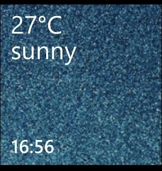
Haru Live Tile.
The Mail app works without sideloading or jailbreaking; you may need to do more steps. Since all major mail accounts do not officially support Windows Phone 8/8.1, the only way to use them is through a custom IMAP/POP email address and app passwords. Refer to the video below for the Gmail account or this guide for the Yahoo account.
Setup Gmail Account on Windows Phone
by u/CaseLost9934 in windowsphone